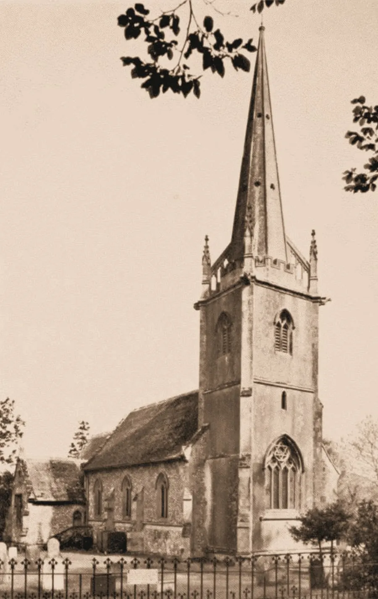
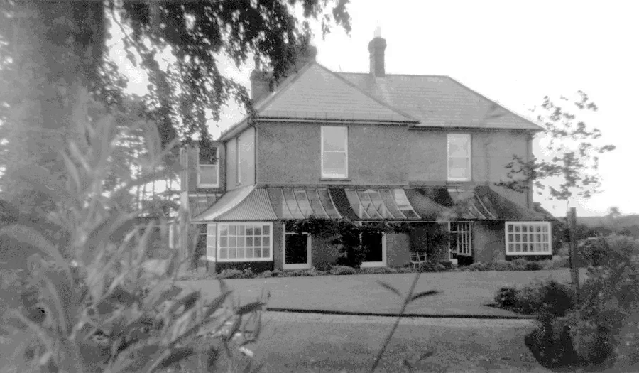
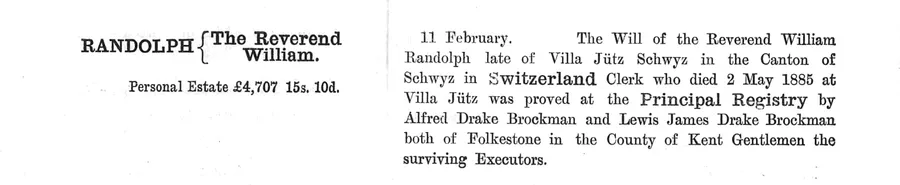

Rev. William Randolph (1816-85)
by Adrian King

The second vicar of St James Alderholt was William Randolph who was born in 1816 at Letcombe Bassett. He was the third son of the Rev. Herbert Randolph, rector of Letcombe Bassett, who from 1787 had studied at Corpus Christi College, Oxford. William was baptized on 28th October 1816. Letcombe Basset was then in Berkshire but since 1974 is now in Oxfordshire.
William was admitted to St John’s College, Cambridge, on 1st June 1836 to start his studies in the Michaelmas Term. He passed the Mathematical Tripos in 1840 as a Senior Optime, equivalent to second-class honours, and received his B.A. Gaining his M.A. from Cambridge in 1843, his degree was recognised a year later ad eundem as equivalent by Oxford University.
William was ordained deacon at Canterbury on 14th June 1840 and priest on 6th June 1841. He was curate of Cheriton with Newington in Kent from 1840 to 1850.
On 29th June 1847 he married Anne Lewis at St. George in Hanover Square, Middlesex. His father performed the ceremony. William was 30 and Anne was 48.
Anne was born on 27th Nov 1798 in Cheriton and her maiden name was Drake-Brockman. She was the widow of the Rev. Edmund Burke Lewis, rector of Toddington in Bedfordshire. They had married 24th May 1821 at St. Martins Church in Cheriton.
William became curate of Sutton Waldron near Iwerne Minster in Dorset from 1852 to 1854. William and Anne are on the 1851 census.

He became perpetual curate of Alderholt in 1854 and was the second minister of the new parish. William Randolph then disappears from Clergy List of 1868. This was probably due to the fact that the couple had moved to Switzerland.

William died 2nd May 1885 while living at Villa Jutz in Schwyz in the Canton of Schwyz. On 11th February 1886 probate of £4707 15s. 10d. was granted to Alfred Drake Brockman and Lewis James Drake Brockman, both of 48 Sandgate Road in Folkestone, Kent.

Anne had died two months earlier on 9th March 1885 at the same location. Probate of £7315 3s. 5d. was granted to the previously mentioned executors on 20th August 1885 — they were Anne’s nephews.
download the PDF here.